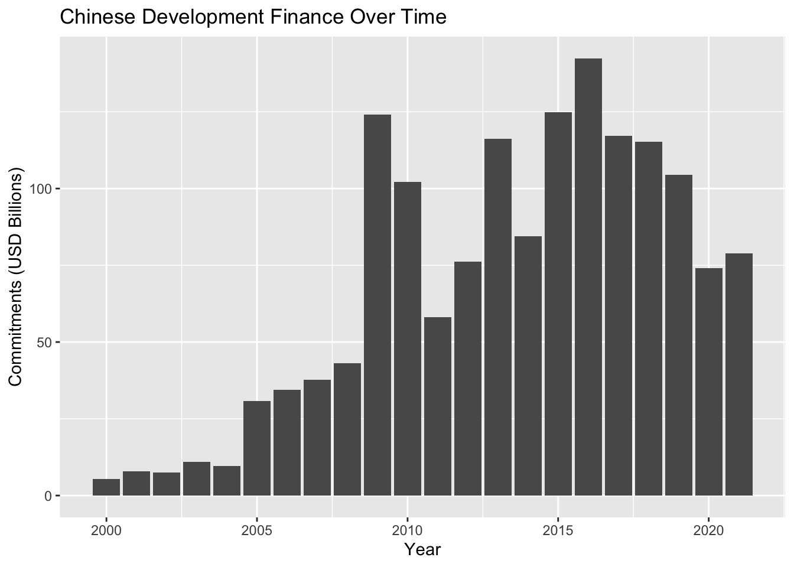
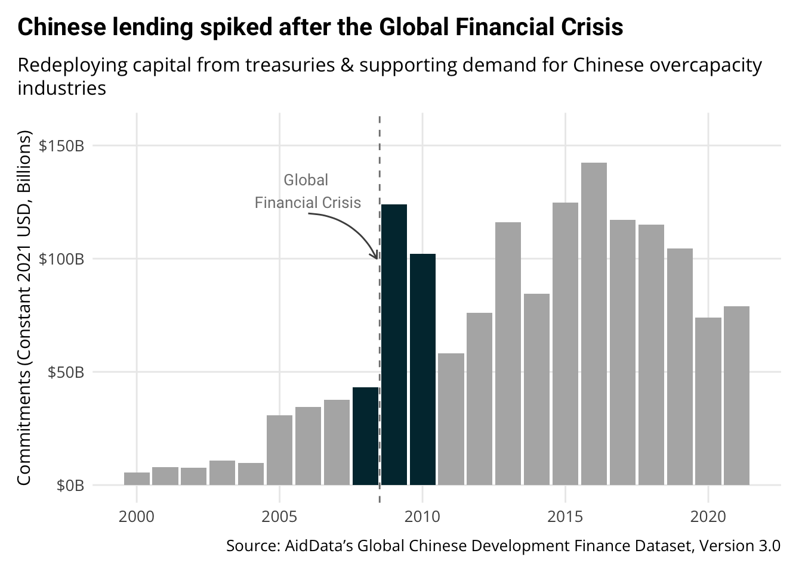
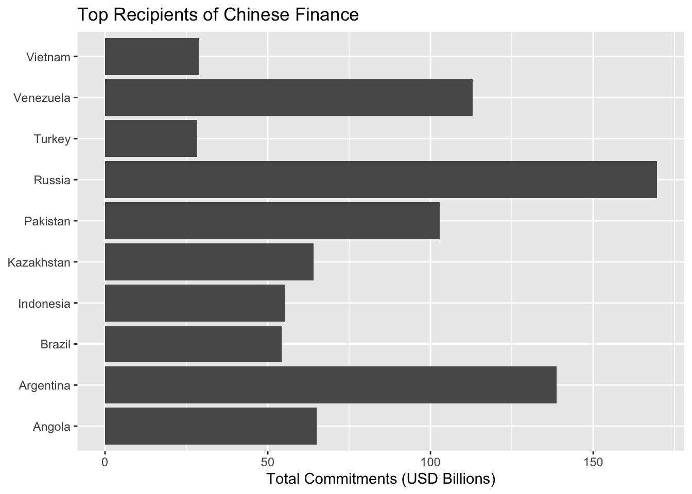
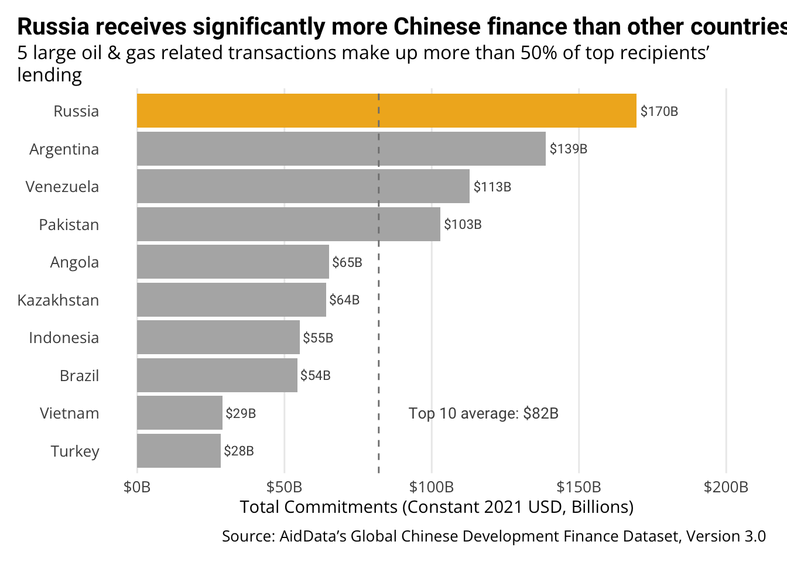
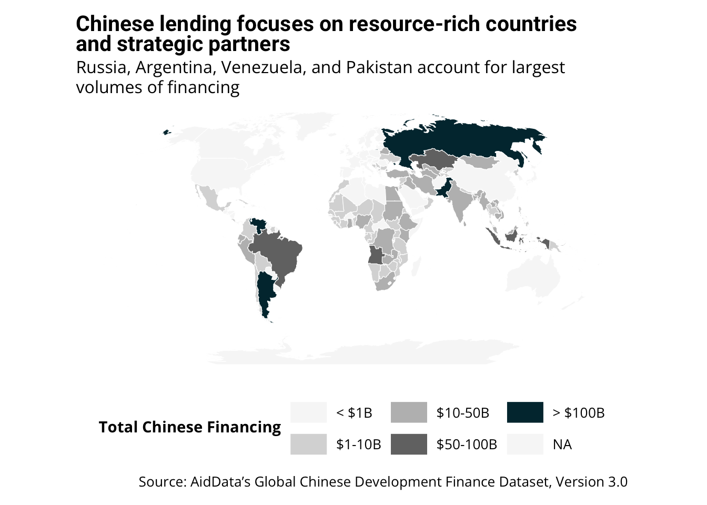

# Core packages
library(tidyverse) # For data manipulation and visualization
library(ggtext) # For formatted text in plots
library(ggrepel) # For non-overlapping text labels
# AidData packages
library(chinadevfin3) # For GCDF 3.0 data
library(aiddataviz) # For AidData themes and colors
# For maps
library(sf) # For working with spatial data
library(rnaturalearth) # For world map data
# Optional packages for specific chart types
library(patchwork) # For combining multiple plots9 Storytelling with Data Workshop (9:30-11:00)
9.1 Workshop Overview
This 90-minute workshop teaches practical techniques for creating compelling data visualizations that tell clear stories about Chinese development finance. Designed for those with just 4 weeks of R experience, we’ll focus on analyzing AidData’s house style, identifying effective storytelling techniques, and applying these principles to your own capstone projects.
9.2 Day Plan Overview
Today is our capstone workshop where we’ll put everything you’ve learned over the past 4 weeks into practice:
- Morning Session (9:30-11:00): This storytelling with data workshop will teach you core principles for creating effective visualizations that communicate clear insights about Chinese development finance
- Midday Work Session (11:30-3:00): You’ll have time to apply these principles to your own data, with one-on-one support available to help overcome technical challenges
- Afternoon Session (3:00-4:30): We’ll reconvene to share our visualizations, provide peer feedback, and polish them into publication-ready graphics
By the end of today, you’ll have created compelling, publication-quality visualizations based on the AidData Loan Performance project data that effectively communicate key insights following professional design principles.
9.3 Setup
9.3.1 1. Create a New Quarto Document
# File → New File → Quarto Document
# Save as "data_storytelling_workshop.qmd" in your week_5/R folderAdd this YAML header to your document:
---
title: "Storytelling with Data Workshop"
author: "Your Name"
format:
html:
embed-resources: true
pdf: default
---9.3.2 2. Load Required Packages
Install new packages:
pak::pkg_install(
c(
"ggrepel",
"patchwork",
"ggtext",
"sf",
"rnaturalearth",
"rnaturalearthdata"
)
)9.4 Learning Objectives
By the end of this workshop, you will be able to:
- Identify effective storytelling techniques in AidData visualizations
- Apply the CLEAR framework to evaluate and create compelling visualizations
- Master 3-4 go-to chart types that effectively communicate development finance insights
- Create publication-ready visualizations for your capstone project
9.5 Workshop Structure (90 minutes)
9.5.1 Part 1: From Data to Story (15 minutes)
- Exploratory vs. explanatory visualization
- The CLEAR framework introduction
- Introduction to AidData’s house style and aiddataviz package with John Custer
9.5.2 Part 2: Visual Storytelling in Practice (30 minutes)
- Small group analysis of recent AidData reports
- Evaluating visualizations using the CLEAR checklist
- Group discussion of effective techniques
9.5.3 Part 3: Application to Capstone Projects (35 minutes)
- Planning your capstone visualizations
- Choosing the right chart types for your story
- Initial sketching and feedback
9.5.4 Part 4: Wrap-up and Day Plan (10 minutes)
- Key takeaways
- Capstone project roadmap
- Schedule for midday work and afternoon session
9.6 Data Preparation
Let’s prepare some data we’ll use for our examples:
# Yearly Chinese development finance flows
gcdf_yearly <- get_gcdf3_dataset() |>
filter(recommended_for_aggregates == "Yes") |>
group_by(commitment_year) |>
summarize(
commitments_bn = sum(amount_constant_usd_2021, na.rm = TRUE) / 1e9,
.groups = "drop"
)
# Top recipient countries
top_recipients <- get_gcdf3_dataset() |>
filter(recommended_for_aggregates == "Yes") |>
group_by(country_name) |>
summarize(
total_bn = sum(amount_constant_usd_2021, na.rm = TRUE) / 1e9,
.groups = "drop"
) |>
slice_max(order_by = total_bn, n = 10)
# Calculate average for reference
avg_value <- mean(top_recipients$total_bn)
# Country-level data for map
country_totals_map <- get_gcdf3_dataset() |>
filter(recommended_for_aggregates == "Yes") |>
group_by(country_name, iso3c) |>
summarize(
total_bn = sum(amount_constant_usd_2021, na.rm = TRUE) / 1e9,
.groups = "drop"
)9.7 The CLEAR Framework
The CLEAR framework, from Matt Harrison’s “Effective Visualization: Exploiting Matplotlib & Pandas,” provides a systematic approach to creating effective visualizations:
Color: Use color strategically and sparingly
- Use color to highlight what’s important
- Always use
scale_color_aiddata()andscale_fill_aiddata()or or manually add AidData colors usingscale_*_manual() - AidData’s primary colors (Wren Twilight, Spirit Gold, Silver, etc.) are built into the aiddataviz package
- Keep background elements in neutral tones
Limited types of visualizations
- Master a few chart types rather than trying everything
- Bar charts for comparisons
- Line charts for trends
- Maps for geographic patterns
- Avoid pie charts, 3D charts, and other complex visualizations
Explanatory titles and subtitles
- Titles should state the conclusion, not just describe the data
- Subtitles provide context or methodology
- Use annotations to explain key points directly on the chart
Audience targeting
- Consider what your audience needs to know
- Match visualization complexity to audience expertise
- Focus on actionable insights for policymakers
References
- Always cite data sources
- Include methodology notes when appropriate
- Be transparent about limitations
9.8 Simple Checklist for Better Visualizations
- Is my main message in the title?
- Have I removed all unnecessary elements?
- Am I using AidData’s color palette via
scale_color_aiddata(),scale_fill_aiddata(), or usingscale_*_manual()and adding AidData colors? - Am I using
theme_aiddata()for consistent styling? - Does color highlight only what’s important?
- Are axes and units clear?
- Is the source clearly cited?
- Would this make sense to someone seeing it for the first time?
9.9 Go-To Visualizations with Real Data
9.9.1 1. The Enhanced Time Series
Perfect for: Annual lending trends, project completions over time, sectoral shifts
Starting with a basic plot of Chinese lending over time:
# Basic plot - starting point
ggplot(gcdf_yearly, aes(x = commitment_year, y = commitments_bn)) +
geom_col() +
labs(
title = "Chinese Development Finance Over Time",
x = "Year",
y = "Commitments (USD Billions)"
)
Transforming into a story-driven visualization:
# Enhanced version
ggplot(gcdf_yearly, aes(x = commitment_year, y = commitments_bn)) +
geom_col(fill = aiddata_colors$gray70) +
# Highlight important years
geom_col(
data = gcdf_yearly |> filter(commitment_year >= 2008 & commitment_year <= 2010),
fill = aiddata_colors$wren_twilight
) +
# Add Global Financial Crisis annotation with arrow
geom_vline(
xintercept = 2008.5,
linetype = "dashed",
color = aiddata_colors$gray50
) +
# Add explanatory text with arrow
annotate(
"text",
x = 2006,
y = 130,
label = "Global \nFinancial Crisis",
family = "Roboto",
color = aiddata_colors$gray50,
size = 3.5
) +
annotate(
"curve",
x = 2006,
y = 120,
xend = 2008.4,
yend = 100,
arrow = arrow(length = unit(0.2, "cm")),
curvature = -0.3,
color = aiddata_colors$gray30
) +
# Clean up axes and formatting
scale_y_continuous(
labels = scales::label_dollar(suffix = "B"),
limits = c(0, max(gcdf_yearly$commitments_bn) * 1.1)
) +
# Add story-driven title and proper labels
labs(
title = "Chinese lending spiked after the Global Financial Crisis",
subtitle = "Redeploying capital from treasuries & supporting demand for Chinese overcapacity industries",
x = NULL,
y = "Commitments (Constant 2021 USD, Billions)",
caption = "Source: AidData's Global Chinese Development Finance Dataset, Version 3.0"
) +
# Apply AidData theme for consistent styling
theme_aiddata()
Key improvements that align with the CLEAR framework:
- Color: Strategic use of color to highlight the 2008-2010 period following the crisis
- Limited visualization: Simple bar chart that clearly shows the pattern of lending over time
- Explanatory title: “Chinese lending spiked after the Global Financial Crisis” tells the story
- Audience-appropriate: Subtitle explains economic context that policymakers would find relevant
- References: Clear source attribution showing where the data comes from
9.9.2 2. The Comparison Bar Chart
Perfect for: Country rankings, sectoral differences, before/after changes
Starting with basic country comparison:
# Basic plot - starting point
ggplot(top_recipients, aes(x = total_bn, y = country_name)) +
geom_col() +
labs(
title = "Top Recipients of Chinese Finance",
x = "Total Commitments (USD Billions)",
y = NULL
)
Transforming into a story-driven visualization:
# Enhanced version
# First calculate average for comparison
avg_value <- mean(top_recipients$total_bn)
ggplot(top_recipients, aes(x = total_bn, y = fct_reorder(country_name, total_bn))) +
# Add bars
geom_col(fill = aiddata_colors$gray70) +
# Highlight top country
geom_col(
data = top_recipients |> filter(country_name == "Russia"),
fill = aiddata_colors$spirit_gold
) +
# Add direct labels
geom_text(
aes(label = scales::dollar(total_bn, suffix = "B", accuracy = 1)),
hjust = -0.1,
family = "Roboto",
color = aiddata_colors$gray30,
size = 3
) +
# Add average line (on top of bars)
geom_vline(
xintercept = avg_value,
linetype = "dashed",
color = aiddata_colors$gray50
) +
# Extend x-axis to fit labels
scale_x_continuous(
labels = scales::label_dollar(suffix = "B"),
limits = c(0, max(top_recipients$total_bn) * 1.2)
) +
# Add story-driven title and proper labels
labs(
title = "Russia receives significantly more Chinese finance than other countries",
subtitle = "5 large oil & gas related transactions make up more than 50% of top recipients' lending",
x = "Total Commitments (Constant 2021 USD, Billions)",
y = NULL,
caption = "Source: AidData's Global Chinese Development Finance Dataset, Version 3.0"
) +
# Add annotation for average
annotate(
"text",
x = avg_value + 5,
y = 2,
label = paste0("Top 10 average: $", round(avg_value, 1), "B"),
hjust = -0.1,
family = "Roboto",
color = aiddata_colors$gray30,
size = 3.5
) +
# Apply AidData theme
theme_aiddata() +
# Additional customizations (can be combined with theme_aiddata)
theme(
panel.grid.major.y = element_blank()
)
Key improvements that align with the CLEAR framework:
- Color: Strategic highlight of Russia as the top recipient, with other countries in neutral gray
- Limited visualization: Simple horizontal bar chart that clearly shows the ranking
- Explanatory title: “Russia receives significantly more Chinese finance than other countries” states the conclusion
- Audience-appropriate: Subtitle highlights key pattern about sector concentration
- References: Clear source citation and context for the average calculation
9.9.3 3. The Geographic Pattern Map
Perfect for: Showing spatial distribution of lending, regional focus, geographic shifts
Starting with preparing map data:
# Get world map
world <- rnaturalearth::ne_countries(scale = "medium", returnclass = "sf")
# Join lending data to map
map_data <- world |>
left_join(country_totals_map, by = c("iso_a3" = "iso3c"))
# Create clear breaks for legend that properly capture all values
breaks <- c(0, 1, 10, 50, 100, 175) # Ensure the top value captures Russia at ~$169B
labels <- c("< $1B", "$1-10B", "$10-50B", "$50-100B", "> $100B")
# Create a version with binned categories for better visualization
map_data <- map_data |>
mutate(
lending_category = cut(
total_bn,
breaks = breaks,
labels = labels,
include.lowest = TRUE
)
)Creating a story-driven map visualization:
# Enhanced map visualization
ggplot() +
# Base map layer
geom_sf(
data = map_data,
aes(fill = lending_category),
color = "white",
size = 0.1
) +
# Use the AidData color palette for sequential data
scale_fill_manual(
values = c(
"< $1B" = "#f7f7f7",
"$1-10B" = "#d9d9d9",
"$10-50B" = "#bdbdbd",
"$50-100B" = "#737373",
"> $100B" = unname(aiddata_colors$wren_twilight)
),
na.value = "#f7f7f7",
name = "Total Chinese Financing"
) +
# Improve the map projection and appearance
coord_sf(crs = st_crs("+proj=robin"), datum = NA) +
# Add story-driven title and proper labels with line break
labs(
title = "Chinese lending focuses on resource-rich countries<br>and strategic partners",
subtitle = "Russia, Argentina, Venezuela, and Pakistan account for largest volumes of financing",
caption = "Source: AidData's Global Chinese Development Finance Dataset, Version 3.0"
) +
# Apply AidData theme with map modifications
theme_aiddata() +
theme(
panel.grid = element_blank(),
axis.text = element_blank(),
axis.ticks = element_blank(),
legend.position = "bottom",
legend.direction = "horizontal",
legend.key.width = unit(1, "cm")
)
Key improvements that align with the CLEAR framework:
- Color: Strategic use of color intensity to show lending concentration
- Limited visualization: Simple choropleth map that clearly shows geographic patterns
- Explanatory title: “Chinese lending focuses on resource-rich countries and strategic partners” highlights the key pattern
- Audience-appropriate: Shows global distribution at a glance
- References: Clear source attribution
9.10 When to Consult the Communications Team
AidData’s communications team has extensive experience with data visualization and is an invaluable resource. Consider reaching out when:
- Creating visualizations for external audiences
- Working on high-profile publications
- Developing complex visualizations (maps, networks, interactive tools)
- Needing guidance on AidData’s visual identity
- Wanting feedback on draft visualizations
The communications team can help with:
- Design refinement
- Color selection
- Layout optimization
- Audience considerations
- Publication requirements
9.11 Important Note on Chart Improvement
The charts we’ve created today are good starting points, but they aren’t perfect. You should use your domain expertise and the skills you’ve learned in this course to identify how they could be improved. For example:
- Would different year groupings better tell the story in the time series chart?
- Should we filter for specific flow types to show different patterns?
- Are there additional annotations that would make the insights clearer?
- Could alternative chart types better convey certain relationships?
Remember, effective visualization is an iterative process. Use your expertise about Chinese development finance to refine these approaches for your specific analysis needs.
9.12 AidData Reports Analysis Exercise (30 minutes)
9.12.1 Exercise Structure:
- Form small groups (2-3 people)
- Each group analyzes visualizations from one report
- Use the CLEAR checklist to evaluate effectiveness
- Identify storytelling techniques and house style elements
- Present key findings to the full group
9.12.2 Materials:
- Belt and Road Reboot
- Power Playbook
- CLEAR evaluation checklist (provided)
- Analysis worksheet (provided)
9.12.3 CLEAR Evaluation Checklist:
For each visualization, rate how effectively it employs each CLEAR element:
Color
Limited Chart Types
Explanatory Elements
Audience Targeting
References
9.12.4 Analysis Worksheet:
For each visualization, answer:
- What story is this visualization telling?
- Who is the intended audience?
- What chart type is used and why is it effective (or not)?
- How does it use annotations, highlights, or other narrative techniques?
- What elements of AidData’s house style are evident?
- How could this visualization be improved?
- What techniques from this could you apply to your capstone?
9.13 Capstone Planning Exercise (35 minutes)
9.13.1 Exercise Structure:
- Individual planning time (15 minutes)
- Pair sharing and feedback (10 minutes)
- Refinement and next steps (10 minutes)
9.13.2 Individual Planning (15 minutes):
- Define your capstone data story:
- What is the key insight or message?
- Who is your audience?
- What action should they take based on your visualization?
- Choose appropriate visualization types:
- What comparison are you showing?
- Which of our go-to charts would work best?
- What adaptations might you need?
- Sketch your visualization:
- What will be the title?
- What elements need highlighting?
- What annotations or context are needed?
9.13.3 Pair Sharing (10 minutes):
- Exchange plans with a partner
- Provide constructive feedback using CLEAR framework
- Suggest refinements or alternative approaches
9.13.4 Refinement (10 minutes):
- Incorporate feedback into your plan
- Identify specific technical needs for implementation
- Create a task list for the midday work session
9.14 Full-Day Capstone Roadmap
9.14.1 Morning Session (9:30-11:00)
- Learning storytelling principles
- Analyzing effective visualizations
- Planning capstone projects
9.14.2 Midday Work Session (11:30-3:00)
- Individual implementation time
- One-on-one consultations with instructors
- Work on technical implementation
- Apply CLEAR principles to your visualizations
9.14.3 Afternoon Session (3:00-4:30)
- Present draft visualizations
- Peer critique and refinement
- Technical troubleshooting
- Final polishing for publication-ready results
9.14.4 Key Milestones:
- By end of morning: Have a clear plan and sketch
- By mid-afternoon: Have working draft visualization(s)
- By end of day: Have polished, publication-ready visualization(s)
9.15 Resources for Further Learning
9.15.1 AidData-Specific Resources
- AidData’s Style Guide
- Available from John Custer and the communications team
- Official guidance on visual identity
- Color palettes and typography
- Recent AidData Reports
- Belt and Road Reboot
- Power Playbook
- Excellent examples of effective data storytelling
9.15.2 Data Visualization Books and Resources
- “Storytelling with Data” by Cole Nussbaumer Knaflic
- Practical techniques for data visualization
- Emphasis on simplicity and focus
- Cedric Scherer’s 2-Day Workshop Materials
- Free comprehensive resource: Graphic Design with ggplot2
- Advanced techniques for publication-quality graphics
- Albert Rapp’s Online Course
- Insightful Data Visualizations for Uncreative R Users
- Excellent paid resource for presentation-ready chart styles and techniques
9.16 Key Takeaways
- Start with the story, not the chart
- Know what message you want to convey
- Choose visualization based on that message
- Apply the CLEAR framework
- Color strategically
- Limit chart types
- Use explanatory titles
- Target your audience
- Include references
- Master a few chart types deeply
- Enhanced time series
- Comparison bar charts
- Geographic pattern maps
- Collaborate with communications
- They’re a valuable resource
- Especially for external-facing work
Remember, effective data visualization isn’t about fancy techniques—it’s about clear communication that drives action.
9.17 Next Steps: Afternoon Work Session
During our midday work session (11:30-3:00), you’ll have the opportunity to:
- Apply these principles to your own data
- Get one-on-one feedback
- Refine visualizations for specific use cases
- Collaborate with peers on visualization challenges
Bring your data and visualization ideas, and we’ll work together to transform them into compelling stories!